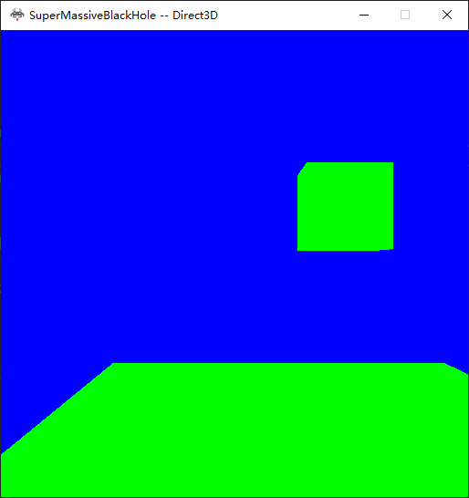
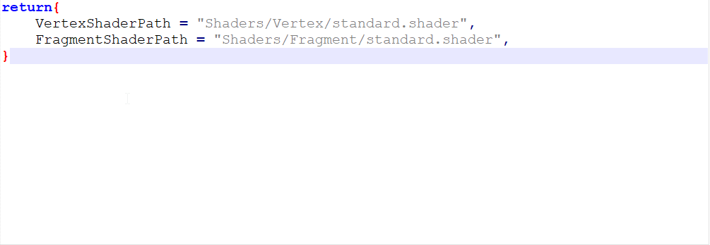
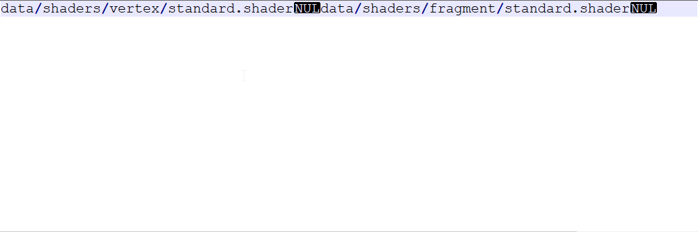
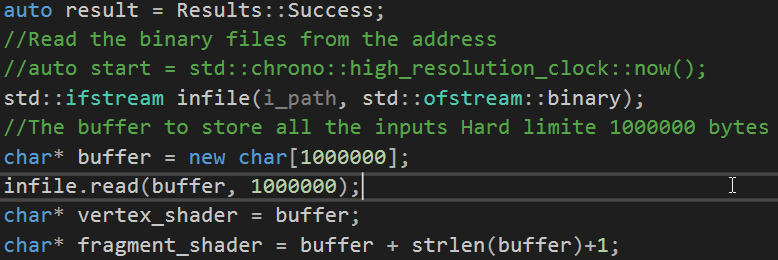

We Generate a binary for effects using the lua files. The human-readable file contain the path the the shaders in source directory, while the binary files contain the path of shaders in runtime directory.
Here is a human-readble effect file use in this project

Path of the vertex shaders and fragment shaders are stored.
Here is the binary files for the same effect

Notice the Wired NUL here is the character '\0' which indicates the end of a string. notice '\0' is different from '\n' and strlen function, which used for getting the lence of C string(char* or const char*). detects the first one. If you store the pathes like this, the end of the first string will be start of the next. Hence, you could easily get the offset of the start address of the second string using the length of the first string. Notice I added "data/" in the binary file. Hence I do not need to add it during rumtime. Which could save a little time(string manipulations take times). Besides, dynamically change assets location during runtime does not make sence. Because, we used a seperate assets building system which will not support it anyway.
Here is the How the runtime application extract the shader pathes

Notice you need that +1 for the second string cause '\0' takes 1 bytes, and since we are working with char*(char have sizeof 1 byte) that +1 means migrate the pointer toward the higher address in memory by 1 byte.
Assignment9_win32.zip Assignment9_x64.zip